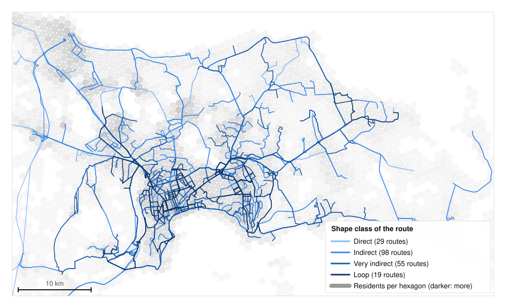
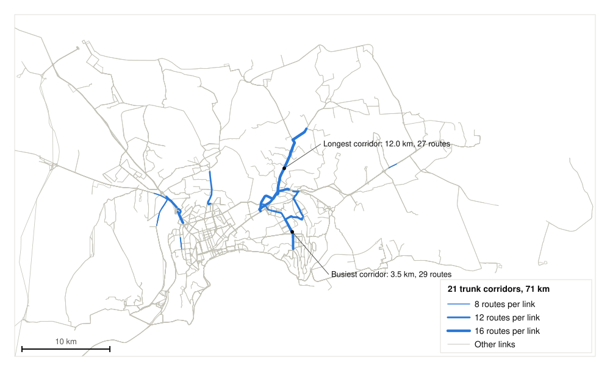
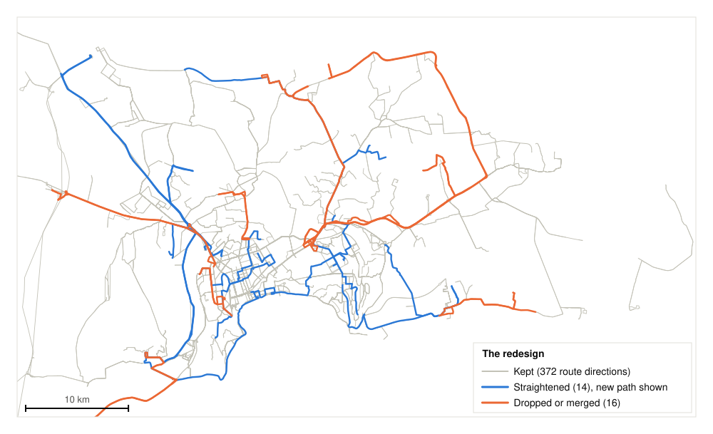
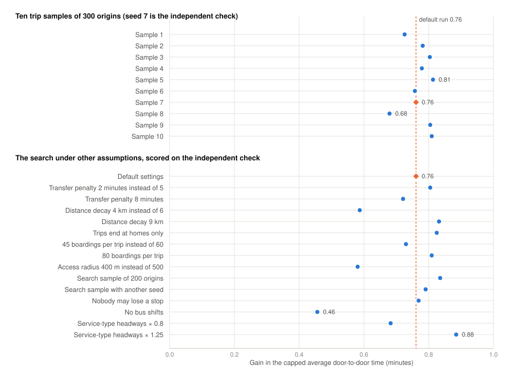

Baku's bus network of about 200 routes is being redesigned, but no peer-reviewed evaluation of it exists and the data needed for one (timetables, vehicle positions and origin–destination flows) is not published. This paper asks how much can be measured, and how far a redesign can be tested, from public data alone. From the transport agency's public map, a population grid, OpenStreetMap destinations, metro entries and one operator's daily boardings, I repair the route geometry, measure directness, duplication, detours, stop spacing and coverage, and build a door-to-door travel model whose gravity demand model ranks routes against observed boardings at a Spearman correlation of 0.58. Only 29 of 201 routes run within 1.4 times the straight line between their ends, and 66% of the 3.04 million residents live within 400 m of a stop. A greedy search that keeps today's fleet and applies the changes used by redesigns elsewhere shortens the average possible trip from 51.8 to 50.9 minutes (0.76 minutes with impossible trips counted at 120), or delivers today's modelled travel times with about 12% fewer buses than the estimated headways imply. On 10 independent trip samples the gain counted that way is 0.68 to 0.81 minutes, and under 14 alternative assumptions 0.46 to 0.88, the smallest without bus shifts; a stricter rule that strands nobody gains as much as the default. The pipeline, data and results are released to regenerate or, with a reader for another map format, apply to other cities that publish only a map.
Keywords: bus network design; public transport; open data; accessibility; Baku; transit network design problem
Most of the world's cities run their buses on networks that grew route by route, and many have found, when they finally redrew them, that fewer, straighter and more frequent routes serve more people for the same money (Houston in 2015) or with added service (Barcelona between 2012 and 2018, Dublin since 2021). Baku, a city of 2.4 million (3.2 million with Sumqayıt and the Absheron district; State Statistical Committee, 2026a), is in the middle of such a redesign: the transport agency AYNA (Azərbaycan Yerüstü Nəqliyyat Agentliyi, the Azerbaijan Land Transport Agency) has analysed all routes with an international consultant on a digital twin of the city since 2023, raised bus speeds with 114 km of bus lanes, and begun launching a new network in January 2026 (Ministry of Digital Development and Transport, 2023, 2026). The public sees only the agency's map of routes and stops and a handful of figures in press releases; there is no published evaluation beyond an earlier unreviewed report (Section 2.1), and the data such an evaluation normally rests on (timetables, vehicle positions and where riders travel) is not public.
This paper asks a narrower question than the agency's consultant could: how much can be learned about a bus network, and how far can a redesign be tested, from public data alone? The answer matters beyond Baku: many cities publish a map and little else.
Three things are new here. I measure Baku's whole network from its geometry, after repairing defects in the public data that would otherwise distort every measure. I build a door-to-door travel model from public data alone and state its agreement with observed ridership rather than assume it. And I run a fleet-neutral redesign search whose result is checked on trips it was not tuned to and under alternative assumptions, so that the size of its gain and the uncertainty around it are both reported. The whole pipeline, with every input, is released as a standard-library Python repository that regenerates every result in this paper from three commands.
I claim no new algorithm, and the findings are not forecasts: headways for most routes are estimated, the demand model is a gravity model, and the network is described as the agency's map publishes it. What the paper offers is a reproducible diagnosis, an estimate of what a cautious redesign would gain, and an account of what that estimate depends on.
Baku's surface public transport is planned by AYNA and operated by 39 carriers (the data lists 42 carrier names, three of them spelling variants of others), of which the state operator BakuBus runs 55 of the 201 routes in the agency's data; a 56th route with BakuBus boardings, route 49, is listed on the map under another carrier. About 2,300 buses were in daily service in January 2026, up from 1,720 in 2022 (Ministry of Digital Development and Transport, 2026). In December 2023 the Ministry presented the Mobility Transformation Program, under which AYNA and an international consultant analysed all routes on a digital twin of Baku, with 1.6 million bus trips a day reported (Ministry of Digital Development and Transport, 2023). By November 2024 bus lanes and route optimisation had raised bus speeds in Baku from 18 to 22 km/h (Report.az, 2024). In September 2025 the consultant reported weak integration between Baku and Absheron routes, overlapping routes, and 17% of residents with limited access; the new network, launched from January 2026 with eight routes, was expected to need about 2,800 buses, and gross-cost contracts were planned (APA, 2025).
None of the consultant's data is public. The agency's map API publishes routes, stops, stop sequences and route shapes, and the state operator's daily boardings per route are on the national open-data portal; nothing else is. The map data used here was scraped from the API on 23 October 2026 with the scraper in the repository; a public snapshot of 6 May 2026 (github.com/samirmehd1yev/best_route_finding) is identical to it row for row in every table, so the map has not yet been updated for the new network, while the boardings file already lists eight routes the map does not carry. An earlier unreviewed report on the same map data (Transport Systems Research Group, 2026) used different definitions and reached different figures; the measures here are defined, sourced and regenerable, and supersede it.
Whole-network redesigns elsewhere followed a similar recipe: fewer, straighter routes that run more often, overlapping routes merged into frequent trunks, stops spaced further apart, and bus lanes where routes stack up. Seoul reorganised all its bus services in one day in 2004 into trunk and feeder routes with median bus lanes and one fare; bus speeds rose from 11 to 22 km/h by 2010 and passengers by 20% (Allen, 2013). Houston redrew nearly every route in 2015 within about the same budget, moving 80% of resources to ridership and 20% to coverage, and local ridership rose 1.2% in the first year (Schmitt, 2016; Walker, 2014, 2015). Barcelona's Nova Xarxa replaced the old lines with 28 grid lines at 3- to 8-minute headways, with service added; ridership on replaced corridors rose 6% to 24% (Badia et al., 2016; Lynn, 2017). Dublin, redesigning area by area since 2021 with added service, reports boardings up 48% in redesigned areas against 8% elsewhere (BusConnects, 2025). In Tbilisi and Tashkent, two other post-Soviet capitals, minibuses gave way to large buses and 1,000 new buses cut headways from 18 to 20 minutes to 8 to 10; they report ridership up 30% and 26% (EBRD, 2024; Kun.uz, 2026). How much each gained went with whether service was added.
Planning guidelines elsewhere judge a network from two sides. For riders, the door-to-door time of walking, waiting, riding and changing, with a penalty per change, and the share of residents within walking distance of a stop: the Transit Capacity and Quality of Service Manual defines a bus route's coverage area as 400 m from a stop (Kittelson & Associates et al., 2003). For operators, bus-hours, bus-kilometres and the fleet needed. A Soviet planning norm of 1981, since repealed, limited a route to 1.2 to 1.3 times the straight line between its ends, loops excepted (RSFSR Ministry of Motor Transport, 1981). Miami-Dade keeps a detour only if the rider-minutes it adds to through riders (through riders times minutes added), divided by the riders it serves, stay under 5 minutes; Denver's threshold is 3 (Miami-Dade Transit, 2005). Average stop spacing, weighted by how often buses pass, is about 352 m in the United States and 359 m across 38 cities elsewhere, or 401 and 403 m when every route segment counts once (Devunuri et al., 2023); agencies such as TriMet and TransLink aim for 240 to 400 m on local routes (nMotion, 2015; TransLink, 2018), and removing closely spaced stops saved TriMet nearly 6% of running time with no significant ridership loss (El-Geneidy et al., 2006). King County Metro's guidelines keep parallel routes at least half a mile apart (King County Metro, 2021).
Choosing a set of bus routes is the transit network design problem; choosing their frequencies as well is the transit network design and frequency setting problem. Both are NP-hard, and the literature searches rather than enumerates (Kepaptsoglou & Karlaftis, 2009; Farahani et al., 2013; Ibarra-Rojas et al., 2015; Durán-Micco & Vansteenwegen, 2022). Objectives are riders' time, with a transfer penalty of about 5 minutes, and operator cost; constraints are the number and length of routes, coverage, the fleet and a minimum frequency. Methods range from choosing routes from a candidate pool, through local search, simulated annealing and tabu search, to evolutionary algorithms and, recently, graph neural networks trained by reinforcement learning (Holliday et al., 2025). The standard test networks (Mandl's 15 nodes and Mumford's 30 to 127) are far smaller than Baku's 3,456 stops (Mandl, 1980; Mumford, 2013).
I use a greedy local search because it is transparent (every kept change can be explained in one sentence, which matters when people have to approve it), it runs on a laptop in minutes, and the quality of the answer depends far more on the demand data than on the search: without origin–destination data, a better optimiser would only optimise the same gravity model more thoroughly. The demand model is a gravity model (Wilson, 1967) of the kind implemented in scikit-mobility (Pappalardo et al., 2022); the radiation model (Simini et al., 2012) is the main parameter-free alternative. The two better options, smart-card trip chaining, which recovered alighting points for over 80% of boardings in Santiago (Munizaga & Palma, 2012), and mobile-phone records, from which four new routes were proposed for Abidjan (Berlingerio et al., 2013), need data that Baku does not have.
Table 1 lists every input; all are public and committed in the repository with their licences, so the results regenerate without network access.
Table 1. Data sources.
| Data | Source and date | Licence | Used for |
|---|---|---|---|
| 208 bus routes, 3,841 stops, stop sequences and 398 route shapes, each route with its service type | AYNA map API (map-api.ayna.gov.az), scraped 23 October 2026; identical row for row to a public snapshot of 6 May 2026 (github.com/samirmehd1yev/best_route_finding) | None published; redistributed as a research snapshot with attribution | Routes, stops, order, geometry |
| Daily boardings per BakuBus route, 1 January to 30 September 2026 | Bakı Metropoliteni (2026a) via opendata.az | CC BY | Headway estimates, model check, route ranking |
| Daily entries per metro station, and 98 exit coordinates of 27 stations | Bakı Metropoliteni (2026b, 2026c) via opendata.az | CC BY | Trip destinations |
| Population on H3 hexagons of about 0.74 km² | Kontur Population, release 2023-11-01 (Kontur, 2023) | CC BY | Coverage, trip origins and destinations |
| 5,471 weighted destinations (of 5,628 features downloaded): schools, kindergartens, colleges, universities, hospitals, clinics, supermarkets, department stores, malls, marketplaces, offices, town halls, courthouses, railway and bus stations | OpenStreetMap via the Overpass API, 23 October 2026 | Open Database License (ODbL) | Trip destinations |
| One published headway (route H1, every 20 minutes) | Heydar Aliyev International Airport (2024) | None stated (press release) | Headway where known |
| Official population by city and district, 1 January 2026 | State Statistical Committee (2026a), table 1.15 | None stated (official statistics) | Check of the grid |
| Average trip length per bus passenger, 2025 | State Statistical Committee (2026b), table DT_BJ_050 | CC0 | Check of the demand model's trip length |
The study area is the box around the served stops plus 2 km. The grid is Uber's H3 index at resolution 8, whose cells are hexagons of about 0.74 km²; the area holds 2,707 of them with 3.04 million people, and the official figures for Baku, Sumqayıt and the Absheron district total 3.22 million, consistent with a grid two years older. Each hexagon is split into seven points that share its population, its centre and six around it, the way H3 divides a cell into seven at the next resolution, so that coverage is not judged from one point per hexagon.
The map data has defects that would distort every measure if taken at face value, and none is documented. The route length field is the round-trip length, and the duration field is the length divided by 0.6 on every route, so neither is a measurement. On 13 routes the two shapes are filed under the wrong direction; on three directions the shape is stored backwards; one has latitude and longitude swapped; one has latitude equal to longitude on every point; three are stored in scrambled pieces joined by straight jumps of 9 to 20 km; two routes have no shape; one lists each direction's stops twice; and seven routes have no stops at all.
Rather than fix these by hand, I have the loading code detect them from the data, so the repairs survive a new scrape. Every stop is projected onto every segment of a shape, and a dynamic program places the stops along the shape so that their distance along it never goes back by more than 30 m, minimising the total offset; a stop with no in-order position is an order break. Each direction is scored against each stored shape and its reverse, and the stored assignment is replaced only on clear evidence: fewer order breaks by at least the larger of two and 20% of the route's stops, or no more breaks and a median offset below 70% of the current one. A shape that still cannot explain its stops (more than the larger of two and 10% of its stops out of order, a median offset over 60 m or a straight segment over 5 km) is dropped and that direction is drawn as straight lines between stops. After the 23 repairs, 394 of 402 route directions use real shapes, the median stop sits 7.2 m from its line and 90% sit within 13.7 m, and three directions keep one stop slightly out of order.
The results describe the network as the agency's map published it on 6 May 2026 and still published it on 23 October 2026, with ridership from September 2026. The map lags the street: eight routes in the boardings file (M2 to M6, 500, 149E and 195E) do not exist on the map. The findings therefore describe the inherited network that the reform is replacing.
All distances are great-circle; grids and buffers use a flat projection centred on Baku, accurate to better than 1% across the area. A pattern is one direction of one route: its ordered stops, the path between them, and the distance along the path at each stop. One-way length is the distance along the path at the last stop, averaged over a route's directions. End-to-end circuity is path length divided by the straight line between the first and last stop, undefined when they are less than 1 km apart; a route's shape class comes from its less direct direction: direct up to 1.4, indirect to 2, very indirect to 3, and a loop above 3 or with ends less than 1 km apart. Excess over the shortest path compares the path with the shortest route between the same two stops over every link that some route drives, both ways, plus links between stops less than 80 m apart. Rider circuity averages, over every pair of stops at least 1 km apart, the distance along the route divided by the straight line. A detour is a stretch of at most 12 stops and 40% of the route whose path is at least 2.5 times the straight line between its ends and at least 1.5 km longer; overlapping candidates keep the largest. The duplication ratio is total route-kilometres of all directions divided by kilometres of distinct directed links. A trunk corridor is a run of consecutive links at least 1 km long on which at least eight routes share every link. A near-duplicate is a route of at least 10 stops with at least 85% of them also served by one other route; express routes are left out, since skipping a local route's stops is their purpose.
For one trip in one direction, running time is length divided by the moving speed of the route's service type (the agency's working-zone field: urban, suburban, within a settlement, between settlements, intercity, and express variants of the first two) plus 20 s at every stop after the first (nMotion, 2015; WMATA, 2011). Fuel is 0.30 diesel-equivalent litres per kilometre plus 0.05 litres per stop, the latter my estimate from the slope between the test cycles of Nylund and Koponen (2012); together they give 43 L/100 km at 2.65 stops per kilometre, close to the 43.8 L/100 km that study reports for diesel buses on the Braunschweig cycle. CO₂ is 2.67 kg per litre, the IPCC (2006) factor of 74,100 kg per TJ at 43.0 TJ/Gg and a diesel density of about 0.84 kg/L. Moving speeds by service type (22 km/h urban, 29 suburban and urban express, 36 suburban express, 25 within and 31 between settlements, 40 intercity) were set so that total route-kilometres divided by total running time over all directions equals the 22 km/h the agency reported. Fuel is in diesel-equivalent litres: no split of the fleet by fuel is published, and compressed natural gas and diesel emit about the same CO₂ per kilometre.
Each route's headway is the first of: a published value (one route); an estimate from observed boardings where they exist, as trips per direction equal to weekday boardings divided by two and by 60 boardings per trip, over 17 service hours, kept between 3 and 30 minutes (55 routes); or a value by service type, 10 minutes urban, 15 suburban and urban express, 20 suburban express and settlement routes, 30 intercity (145 routes). Trips a day, bus-hours, bus-kilometres and fuel follow from the headway, the round-trip running time and length; buses needed per route are round-trip time times 1.15 for layover divided by headway, rounded up.
No origin–destination data is public, so trips are spread with a gravity model. Origins are sampled in proportion to population. From each origin, trips end at every zone in proportion to its pull times exp(−distance / 6 km), and each origin's trips sum to one. A zone's pull is half its population plus half the study area's total population times the zone's share of all destination weight, where destination weight comes from OpenStreetMap features weighted by kind (a university 10, a mall 10, a hospital 8, a school 3, a supermarket 2, an office 1) and from metro stations at 2 per 1,000 weekday entries, split across their exits; each feature is credited to its nearest zone within 1.5 km, and with the metro exits there are 5,569 destination points. The decay of 6 km gives an average straight-line trip of 8.0 km; the official national average bus trip, 15.6 km in 2025 (State Statistical Committee, 2026b), is not comparable because it covers all bus passengers in Azerbaijan, intercity services included.
The travel graph holds, for every served stop, an arrival and a departure node, and for every route direction a chain of on-board nodes. Boarding costs half the route's headway plus a 5-minute transfer penalty; riding to the next stop costs the hop distance at the route's service-type moving speed plus 20 s; alighting and staying at a stop cost nothing; walking to another stop within 300 m costs the straight-line distance times 1.3 at 1.25 m/s, once between rides, never chained. A trip walks from its origin to any stop within 500 m, follows the cheapest path by Dijkstra's algorithm up to 120 minutes, and walks from a stop within 500 m to its destination; one transfer penalty is removed at the end, since the first boarding is not a change, and trips under 2 km may be walked entirely. Reported are the mean door-to-door time of trips possible within 120 minutes, the shares possible within 30, 45, 60 and 120 minutes, the share of trips without a stop within reach at one end, and the distribution of changes. Each modelled trip is also pushed back along its path to count a boarding on every route it uses, which gives the model's boardings per route.
The model's boardings and the observed boardings are turned into shares of their own totals over the 56 BakuBus routes present in both, and compared by Spearman's rank correlation. The check is run four times, adding one input at a time: one 12-minute headway for every route with trips to homes only; headways by service type; destinations added; headways from boardings added. The last step uses the counts it is checked against and is reported as circular.
A plan is a network plus a fractional number of buses per route (bus-equivalents, so that small changes count); headway equals round-trip time with layover divided by buses, never below 3 minutes, so a route that gets shorter keeps its buses and runs more often. The objective is the average door-to-door time over a fixed sample of trips, with a trip impossible within 120 minutes counted at 120 (below, the capped average, as distinct from the average over possible trips of Section 4.4), from 100 origins drawn by population with one point per hexagon. The fleet never changes. A change is kept only if it lowers the capped average by at least 0.005 minutes and passes a coverage guard: it may leave no more than 500 people without any stop within 500 m, and no more than 3,000 across all changes, counted on the finer seven-point population. No route is made to run less often than every 30 minutes by losing buses, and no route gets more buses than it can use at 3 minutes.
Riders per route are counted where counts exist and otherwise estimated as the model's boardings scaled so that, over the counted routes, model and counts agree in total; a count always wins over the model, and a route with at least 1,000 counted weekday boardings is never dropped. Route 180, whose connecting routes have no stops in the data, is protected: it is left as it is, apart from receiving buses. Five kinds of change are tried. A merge drops a near-duplicate route and gives its buses to the up to three routes sharing most of its stops. A drop removes one of the 20 routes with the fewest riders per bus, its buses going to the routes it overlaps or across the network. A straightening replaces a detour with the shortest path between its end stops along links some route drives today, in the right direction, keeping the stops on that path; the 80 detours saving most time are tried. Stop balancing removes stops closer than 250 m (then 300 m) to a neighbour on every route that uses them, keeping terminals, hubs and any stop that is someone's only one within reach. A shift moves 20% of the buses of the 5, 10 or 20 routes where one more bus saves riders the least waiting (riders times headway divided by buses) to the same number of routes where it saves the most, the marginal form of the square-root rule of frequency setting.
The search screens each structural change alone against today's plan, applies the improving ones in order of gain while re-checking each against the plan as it stands, tries stop balancing, and then up to four rounds of shifts, recounting riders per route each round. The result is scored on an independent check: 300 other origins, with a different seed and the seven-point population, the same model that measures today's network. Finally the share of the fleet that would give today's capped average on the independent check is found by halving an interval six times, accurate to about one percentage point.
Three checks ask how much the result depends on the sample and the assumptions. The redesign and today's network are scored on 10 samples of 300 origins, one of them the independent check itself. The search is run again under 14 changed settings: a transfer penalty of 2 and of 8 minutes, distance decay of 4 and of 9 km, trips to homes only, 45 and 80 boardings per trip, an access radius of 400 m instead of 500, a search sample of 200 origins, another search sample of 100, the coverage guard tightened so that nobody loses a stop, no bus shifts, and the service-type headway table scaled by 0.8 and by 1.25; the speeds are never varied. And coverage is measured at 300, 400, 500, 800 and 1,000 m.
Baku's 201 routes with stops run in 402 directions over 3,456 served stops; the median route is 17.1 km one way with 27.5 stops. The routes are indirect (Table 2, Figure 1). The median route is 1.77 times the straight line between its ends, and only 20 of the 182 non-loop routes meet the 1.3 limit of the Soviet norm. The median route is 21% longer than the shortest path buses could take between its ends on links they already drive, and for a rider the median route covers 1.45 times the straight-line distance between any two of its stops at least 1 km apart. Six of the 20 busiest BakuBus routes are very indirect or loops, including the busiest, route 14.
Table 2. Directness of the 201 routes, from the less direct direction of each.
| Shape class | Path length ÷ straight line between the ends | Routes |
|---|---|---|
| Direct | up to 1.4 | 29 |
| Indirect | 1.4 to 2 | 98 |
| Very indirect | 2 to 3 | 55 |
| Loop | over 3, or ends less than 1 km apart | 19 |
The routes overlap. Buses run 7,398 km of route over 3,824 km of distinct links, a duplication ratio of 1.93, and up to 26 routes use one link. There are 21 trunk corridors (Figure 2), 71 km in total, where eight or more routes share every link; the longest runs 12.0 km from the ASAN Xidmət centre on X. R. Ulutürk street, past the Olympic Stadium and along the Zabrat highway, to the State Customs Committee Academy, with 15.8 routes per link on average and 27 routes using it, and the busiest, 3.5 km between the Xətai district court and Neftçilər metro station, is used by 29 routes with up to 25 on one link. Twenty-five routes are near-duplicates, in 72 pairs, 59 of them between carriers: route 190 has 100% of its stops on route 160, and 173A and 173B have 94% on each other.
Detours are common and mostly unnecessary. There are 271 on 139 routes; together they add 939 km to one trip in each direction of every route. For 217 of them, 719 km on 118 routes, everyone living within 400 m of the stops inside the detour also has another route within 400 m. The longest, on route 177, covers 21.2 km between two stops 7.8 km apart, adding 13.4 km and 27.5 minutes to every through trip for 53 people whom only that route serves.
Stop spacing is uneven rather than tight: the median gap is 420 m, above the 401 to 403 m segment-weighted averages elsewhere (Section 2.2) and the 240 to 400 m agency targets, yet 5.4% of gaps are under 200 m and 23.9% under 300 m. At 20 s and 0.05 litres per stop, stopping takes an estimated 18.8% of running time and 20.4% of fuel.
Of the 3.04 million people in the study area, 55.5% live within 300 m of a served stop, 66.0% within 400 m, 73.4% within 500 m, 87.2% within 800 m and 91.5% within 1,000 m. Door to door, on 300 origins sampled by population, the average possible trip takes 51.8 minutes; 16.2% of trips can be made within 30 minutes, 29.4% within 45, 42.2% within 60 and 66.3% within 120; 34.6% of trips have no stop within 500 m at one end or both; the average trip is 8.0 km in a straight line. Of the possible trips, 11.4% are walked, 28.9% need no change, 43.2% one, 15.0% two and 1.5% three or more.
The estimated headways imply 33,363 trips a day, 28,327 bus-hours, 588,994 bus-kilometres, 226,592 diesel-equivalent litres and 605 tonnes of CO₂, and a fleet of 2,015 buses, 88% of the 2,300 reported in service.
BakuBus routes carried 768,253 boardings on an average weekday in September 2026 on 64 routes, 56 of which are in the map with 692,288. Route 14 carries the most, 31,303 a weekday and 2,285 per kilometre of route; route 150E recorded only 16.5. The model's ranking of the 56 counted routes improves as inputs are added: a flat 12-minute headway for every route gives a Spearman correlation of 0.41, headways by service type 0.56, destinations 0.58, and headways from the boardings themselves 0.77, which is circular. The fair figure is 0.58. In that run (its route-by-route table regenerates with one setting changed) the model overrates the express and long suburban routes E1 (6.4 times its observed share), 205 (3.4), 120E (2.6) and 72 (2.2), and gives the suburban routes 139, 141E, 189 and 163 and the express 140E under 15% of their observed shares.
Stop balancing alone, removing stops closer than 250 m to a neighbour on every route that uses them while keeping terminals and hubs and never leaving a gap over 700 m, removes 351 stops: the median gap rises from 420 to 473 m, the share of people within 400 m of a stop falls by 0.15 points, 28 fewer buses are needed at today's headways, bus-hours fall 1.5% and fuel 1.7%, and the average door-to-door trip shortens from 51.8 to 51.6 minutes.
With the default settings the search keeps 27 changes: five merges (114B into 114A, 100 into 108B, 173A into 173B, 210 into 215, 169 into 168), three drops (164, 39 and 150E), 14 straightened detours on 12 routes, one stop-balancing pass removing 338 stops, and four shifts moving 25, 19, 19 and 14 bus-equivalents. Routes go from 201 to 193 (Figure 3). Seven of the eight removed routes have estimated rather than counted riders; the eighth, 150E, is the only counted route with under 1,000 boardings a weekday. On the search sample the capped average falls by 1.35 minutes, of which the bus shifts give 54%, stop balancing 16%, straightening 15%, merges 11% and drops 5%.
On the independent check (Table 3), the average possible trip shortens by about a minute and the capped average by 0.76 minutes; the shares within 30, 45 and 60 minutes rise from 16.2, 29.4 and 42.2% to 16.6, 30.3 and 43.4%. Route length falls 5.8% and distinct links 3.8%, and the share of gaps under 300 m falls to 14.6%. The same buses run 3.2% more trips on shorter routes, so frequencies rise and waits shorten; bus-kilometres rise 1.3% and fuel stays level because buses also stop less. The price is paid in coverage and changes: about 5,000 fewer people are within 400 m of a stop, 976 have no stop within 500 m any more, and the share of trips with two or more changes rises by about a point.
Table 3. Today's network and the redesign on the independent check (300 origins).
| Measure | Today | Redesign |
|---|---|---|
| Routes | 201 | 193 |
| Stops served | 3,456 | 3,105 |
| Route length, all directions (km) | 7,398 | 6,970 |
| Distinct links (km) | 3,824 | 3,678 |
| Duplication ratio | 1.93 | 1.90 |
| Median stop gap (m) | 420 | 470 |
| People within 400 m of a stop | 65.96% | 65.80% |
| People left without a stop within 500 m | 0 | 976 |
| Average door-to-door time, possible trips (min) | 51.82 | 50.86 |
| Capped average door-to-door time, impossible trips as 120 (min) | 74.82 | 74.06 |
| Trips possible within 45 minutes | 29.4% | 30.3% |
| Trips possible within 120 minutes | 66.3% | 66.4% |
| Possible trips with two or more changes | 16.5% | 17.4% |
| Trips a day | 33,363 | 34,418 |
| Bus-hours a day | 28,327 | 28,327 |
| Bus-kilometres a day | 588,994 | 596,868 |
| Fuel a day (diesel-equivalent litres) | 226,592 | 226,708 |
The improvement can instead be taken as a smaller fleet. With 88.3% of the redesigned network's buses, cut evenly on every route, the independent check's capped average is no longer than today's: 1,692 bus-equivalents instead of today's 1,916, which round up per route, as in Section 4.2, to the 2,015 whole buses of Section 5.3; the fleet-saving option rounds up to 1,796. Both fleets are those the estimated headways imply, not counts; the saving is 11.7% in bus-equivalents and bus-hours and 10.9% in whole buses. Bus-hours fall from 28,327 to 25,007, bus-kilometres from 588,994 to 526,923 (−10.5%), fuel from 226,592 to 200,140 litres (−11.7%) and CO₂ from 605 to 534 tonnes a day.
Scored on 10 samples of 300 origins, one of them the independent check, the redesign's gain in the capped average is 0.68 to 0.81 minutes, mean 0.77 with a standard deviation of 0.04, and positive in every sample (Figure 4); the level itself moves by about 4 minutes between samples, so the gain should be quoted with its range and the level not to two decimals. Under the 14 changed settings (Table 4) the capped gain stays between 0.46 and 0.88 minutes and today's travel times need 87 to 93% of the buses in every run (7 to 13% less fuel). It is smallest without the bus shifts: the 23 structural changes alone gain 0.46 minutes, three fifths of the default run's 0.76, and give today's travel times with 93% of the buses, so the shifts add the remaining 0.30 minutes and 5 points of fleet. Among the runs with shifts it is smallest with shorter trips or a shorter access radius and largest with the service-type headways scaled by 1.25 or a larger search sample; scaling that table, which sets 145 of the 201 headways, by 0.8 or 1.25 leaves the gain at 0.68 and 0.88 minutes and the fleet share at 88%. What the search keeps is also stable: two to four drops, 12 to 17 straightened detours, one stop-balancing pass and, where allowed, four shifts in every run, and five merges in 12 of the 15. A larger or a different search sample keeps 32 or 33 changes instead of 27 with the same gain on the independent check, so the sample decides the changes at the margin, not the effect.
Under a strict coverage guard, in which no change may leave anyone without a stop within 500 m, the search keeps 24 changes and gains 0.77 minutes, as much as the default run's 0.76.
Table 4. The search under other assumptions: gain in the capped average on the independent check and the share of the fleet that gives today's travel times.
| Setting | Changes | Capped gain (min) | Fleet for today's times |
|---|---|---|---|
| Default settings | 27 | 0.76 | 88% |
| Transfer penalty 2 minutes instead of 5 | 26 | 0.80 | 88% |
| Transfer penalty 8 minutes | 26 | 0.72 | 88% |
| Distance decay 4 km instead of 6 | 27 | 0.59 | 90% |
| Distance decay 9 km | 26 | 0.83 | 88% |
| Trips end at homes only | 25 | 0.82 | 87% |
| 45 boardings per trip instead of 60 | 25 | 0.73 | 88% |
| 80 boardings per trip | 26 | 0.81 | 88% |
| Access radius of 400 m instead of 500 | 24 | 0.58 | 90% |
| Search sample of 200 origins | 32 | 0.84 | 87% |
| Search sample with another seed | 33 | 0.79 | 88% |
| Nobody may lose a stop | 24 | 0.77 | 88% |
| No bus shifts | 23 | 0.46 | 93% |
| Service-type headways scaled by 0.8 | 26 | 0.68 | 88% |
| Service-type headways scaled by 1.25 | 28 | 0.88 | 88% |
Several kept changes rest on estimates alone. Route 519, a 2.1 km shuttle with three stops and no counts, is credited by the model with 14,700 boardings a day and raised from every 15 minutes to every 3. The three dropped routes have little evidence behind them: 164 and 39 have no counts and estimated boardings of 133 and 582 a day, and 150E recorded 16.5 boardings a weekday. Six routes without counts (131, 197, 198, 550, 551, 554) go from every 15 to every 30 minutes on estimates alone, and two more (54 and 50) from every 10 to about every 24. Each straightened stretch follows links that buses drive today, but turns, one-way streets and the skipped stops, some of which serve schools and clinics, are not checked. The merge of 210 into 215 alone leaves 495 people without a stop within 500 m, just under the limit per change.
Working only from public data, the diagnosis points the same way as the consultant's: overlapping routes, weak links between parts of the region, and a sizeable minority of residents with poor access. The consultant reported 17% with limited access, by a definition that is not public; here 12.8% live more than 800 m in a straight line from any served stop and 34% more than 400 m. The consultant's network needs about 2,800 buses against about 2,300 in service; the fleet-neutral search finds that today's 2,015 implied buses could be about 11% fewer (12% in bus-hours) at today's travel times, which is not a contradiction, since the consultant redesigns for growth and the search here only removes waste. Where the two disagree, the agency's model should be trusted on anything that depends on data it has and this work does not.
The results are not forecasts. Headways are estimated for 200 of 201 routes; the implied fleet of 2,015 lands near the 2,300 reported, so the headways are plausible overall though individual routes can be far off, and scaling the service-type table that sets 145 of the headways by 0.8 or 1.25 leaves the fleet share at 88% (Table 4). The demand model ranks routes at 0.58; the metro is not in the travel graph, so trips that would use it look slower or impossible by bus; there is no vehicle capacity or crowding, so busy routes look better than they are and a shift can overload them; there is one all-day weekday average, walking at 1.3 times the straight line regardless of barriers, and speeds by service type rather than by street; counts exist for one operator only and describe today's routes, so a merge that moves riders onto a counted route does not raise its count, and counts only steer which changes are tried while the model's demand decides which are kept; the population grid is two years older than the official figures; and the search is greedy over existing routes, so it finds improvements, not the best network, and invents no routes. The bus shifts, which give 54% of the gain on the search sample, rank routes by riders per route, estimated for 145 of them; every one of the 32 routes that gives up buses in the default run has estimated riders, so the shifts are the least certain part of the result; without them three fifths of the gain and a 7% fleet saving remain (Table 4). The gain of about a minute per trip is small; the robustness checks establish its sign and order of magnitude, not its second decimal.
Everything here needs only a public map with stop sequences and shapes, a population grid and OpenStreetMap, plus metro entries where a metro exists; destinations from OpenStreetMap and the metro raised the model's ranking of routes from 0.56 to 0.58. The boardings of one operator cannot be credited with a fair gain in fit, since the step that uses them (0.58 to 0.77) is checked against the same counts; their value is that they set the headways of 55 routes and kept the search from dropping busy routes. The repairs are detected rather than hard-coded, and every assumption is a setting with its source. Only the reader is specific to Baku: about twenty lines read AYNA's four tables, and a reader for another format, GTFS for example, replaces them; the repairs, measures, travel model and search work on the routes, stops and shapes the reader returns, and the service types that key the headway and speed settings are renamed to the new city's. The method's weakest link travels with it: without origin–destination data the demand model is a gravity model, and checks like those of Section 5.6 should accompany any such estimate.
Several settings are policy choices that the model only parameterises: whether the gain is taken as faster trips or fewer buses; how many people may lose a stop within walking distance so that others travel faster, where the strict answer of none costs nothing here; how much riders mind changing buses; which routes are fixed by contracts or school service; and whether routes of different carriers can be merged at all, which matters because 59 of the 72 near-duplicate pairs involve two carriers and the planned gross-cost contracts would make it easier.
For the agency this work offers two things. The first is a measured baseline: when the map API carries the new network, the same three commands will score it on the same measures and the same 300-origin check. The changes of Section 5.7 are candidates for people who know the city to review against that network, with the strict coverage guard of Section 5.6, which costs nothing, as the safer rule; route 519's riders should be counted before a bus is added, and each straightened path checked on the ground. The second is a statement of what the estimates stand in for: a public timetable or GTFS feed would replace the headway estimates for 200 of 201 routes and the repair of the map's defects, and boardings per route for all carriers would replace the model's ranking for the 145 routes without counts. The pipeline already writes today's network and the redesign as GTFS feeds.
From public data alone, Baku's bus routes can be shown to be indirect, heavily duplicated and full of detours, four in five of which serve nobody who lacks another route within 400 m, with a third of residents more than 400 m from any stop. A travel model built from the same data ranks routes against observed boardings only moderately well, and says so. Within that limit, a cautious redesign that keeps every bus, merges near-duplicates, drops three lightly used routes, straightens detours, balances stops and moves buses to where they save the most waiting delivers today's modelled travel times with about 12% fewer buses than the estimated headways imply, or trips about a minute shorter, and the gain survives other samples and other assumptions; three fifths of it remains without the bus shifts, the part that rests on estimated riders. The strict version that strands nobody gives up none of it. When the agency's map carries the new network, the same pipeline will score it against this baseline. The pipeline, data and results are released so that the results can be regenerated, the assumptions changed, and the method applied, once a reader for its map format is added, to the next city whose agency publishes a map and nothing else.
Data and code availability: every input, setting, script and result, including today's network and the redesign as GTFS feeds (output/redesign/gtfs_today.zip and gtfs_redesign.zip), is in the repository github.com/ismatsamadov/route_efficiency, release v1.1.0, archived at https://doi.org/10.5281/zenodo.23604370 (all versions: https://doi.org/10.5281/zenodo.23602093). The release holds the map database scraped on 23 October 2026, identical in every table to the public snapshot of 6 May 2026.
Ethics: this study analysed only publicly available, aggregated, non-personal data (bus routes and stops, a population grid, daily boardings per route). No human participants were involved and no ethics approval was required.
Competing interests: none. Declaration of interests: the author declares no known competing financial interests or personal relationships that could have appeared to influence the work reported in this paper.
Funding: this research did not receive any specific grant from funding agencies in the public, commercial, or not-for-profit sectors.
Declaration of generative AI and AI-assisted technologies in the writing process: during the preparation of this work the author used Claude (Anthropic), through the Claude Code command-line tool, to write and test the code of the repository, to draft and edit the text of this manuscript, to check every reported number against the repository's outputs and to review the manuscript. After using this tool, the author reviewed and edited the content as needed and takes full responsibility for the content of the publication.




The maps draw the agency's route geometry and the Kontur population grid; no OpenStreetMap data is drawn.
Allen, H. (2013). Bus reform in Seoul, Republic of Korea. Case study prepared for Global Report on Human Settlements 2013. UN-Habitat. https://unhabitat.org/sites/default/files/2013/06/GRHS.2013.Case_.Study_.Seoul_.Korea_.pdf
APA (2025, September). Azerbaijan to implement gross contract system to ensure sustainable public transport financing. https://en.apa.az/infrastructure/azerbaijan-to-implement-gross-contract-system-to-ensure-sustainable-public-transport-financing-478431
Badia, H., Argote-Cabanero, J., & Daganzo, C. F. (2016). How network structure can boost and shape the demand for bus transit. Institute of Transportation Studies, University of California, Berkeley. https://its.berkeley.edu/node/4590
Bakı Metropoliteni (2026a). Daily passengers per BakuBus route [dataset]. opendata.az, dataset 32766a9d-479c-41ff-a660-7b739b4ff034. https://admin.opendata.az/dataset/32766a9d-479c-41ff-a660-7b739b4ff034
Bakı Metropoliteni (2026b). Daily passengers per metro station [dataset]. opendata.az, dataset 66051a52-1172-4c59-8ea2-1062562c991f. https://admin.opendata.az/dataset/66051a52-1172-4c59-8ea2-1062562c991f
Bakı Metropoliteni (2026c). Metro exits [dataset]. opendata.az, dataset 3108fb32-8483-4126-8283-17f2f1452548. https://admin.opendata.az/dataset/3108fb32-8483-4126-8283-17f2f1452548
Berlingerio, M., Calabrese, F., Di Lorenzo, G., Nair, R., Pinelli, F., & Sbodio, M. L. (2013). AllAboard: A system for exploring urban mobility and optimizing public transport using cellphone data. In Data for Development (D4D) Challenge, NetMob 2013. https://perso.uclouvain.be/vincent.blondel/netmob/2013/D4D-book.pdf
BusConnects (2025). BusConnects Dublin progress report, March 2025. National Transport Authority. https://busconnects.ie/wp-content/uploads/2025/04/BusConnects-Dublin-Progress-Report-March-2025-WEB.pdf
Devunuri, S., Lehe, L. J., Qiam, S., Pandey, A., & Monzer, D. (2023). Bus stop spacing statistics: Theory and evidence. arXiv:2208.04394. https://arxiv.org/abs/2208.04394
Durán-Micco, J., & Vansteenwegen, P. (2022). A survey on the transit network design and frequency setting problem. Public Transport, 14, 155–190.
EBRD (2024). Tbilisi gets greener and more inclusive. https://www.ebrd.com/news/2024/tbilisi-gets-greener-and-more-inclusive.html
El-Geneidy, A. M., Strathman, J. G., Kimpel, T. J., & Crout, D. T. (2006). Effects of bus stop consolidation on passenger activity and transit operations. Transportation Research Record, 1971, 32–41.
Farahani, R. Z., Miandoabchi, E., Szeto, W. Y., & Rashidi, H. (2013). A review of urban transportation network design problems. European Journal of Operational Research, 229(2), 281–302. https://doi.org/10.1016/j.ejor.2013.01.001
Heydar Aliyev International Airport (2024, August). H1 Airport Express route will now operate 24/7 for the convenience of passengers. https://www.airport.az/en/press-release/h1-airport-express-route-will-now-operate-24-7-for-the-convenience-of-passengers/
Holliday, A., El-Geneidy, A., & Dudek, G. (2025). A neural-evolutionary algorithm for autonomous transit network design. Transportmetrica B: Transport Dynamics, 13(1). https://doi.org/10.1080/21680566.2025.2561863
Ibarra-Rojas, O. J., Delgado, F., Giesen, R., & Muñoz, J. C. (2015). Planning, operation, and control of bus transport systems: A literature review. Transportation Research Part B, 77, 38–75. https://doi.org/10.1016/j.trb.2015.03.002
IPCC (2006). 2006 IPCC guidelines for national greenhouse gas inventories, Volume 2, Chapter 1. https://www.ipcc-nggip.iges.or.jp/public/2006gl/pdf/2_Volume2/V2_1_Ch1_Introduction.pdf
Kepaptsoglou, K., & Karlaftis, M. (2009). Transit route network design problem: Review. Journal of Transportation Engineering, 135(8), 491–505. https://doi.org/10.1061/(ASCE)0733-947X(2009)135:8(491)
King County Metro (2021). King County Metro service guidelines, November 17, 2021. https://cdn.kingcounty.gov/-/media/king-county/depts/metro/documents/about/policies/equity/metro-service-guidelines-111721.pdf
Kittelson & Associates, KFH Group, Parsons Brinckerhoff Quade & Douglass, & Hunter-Zaworski, K. (2003). Transit Capacity and Quality of Service Manual, 2nd ed., Part 3: Quality of Service (TCRP Report 100). Transportation Research Board. https://onlinepubs.trb.org/onlinepubs/tcrp/docs/tcrp100/Part3.pdf
Kontur (2023). Kontur Population: Azerbaijan, release 2023-11-01 [dataset]. Humanitarian Data Exchange. https://data.humdata.org/dataset/kontur-population-azerbaijan
Kun.uz (2026, February 26). Tashkent bus revenue hits UZS 644 billion as passenger numbers double. https://kun.uz/en/48790711
Lynn, J. (2017). Barcelona's bus network: Better access if you change buses. Human Transit. https://humantransit.org/2017/04/guest-post-barcelonas-bus-network-better-access-if-you-change-buses.html
Mandl, C. E. (1980). Evaluation and optimization of urban public transportation networks. European Journal of Operational Research, 5(6), 396–404. https://doi.org/10.1016/0377-2217(80)90126-5
Miami-Dade Transit (2005). Service standards presentation to the Regional Transportation Committee, November 10, 2005. https://www.miamidade.gov/citt/library/strategic-financial-studies/2013/cost-other-studies/analysis-activity/2006-1ServiceStandardPresentation%20%5BCompatibility%20Mode%5D.pdf
Ministry of Digital Development and Transport (2023, December 18). Presentation of Mobility Transformation Program in Azerbaijan took place. https://mincom.gov.az/en/media-en/news/presentation-of-mobility-transformation-program-in-azerbaijan-took-place
Ministry of Digital Development and Transport (2026). Roundtable on the 2025 State Program for the improvement of transport infrastructure in Baku and surrounding areas. https://mincom.gov.az/en/media-en/news/roundtable-on-the-2025-state-program-for-the-improvement-of-transport-infrastructure-in-baku-and-surrounding-areas
Mumford, C. L. (2013). New heuristic and evolutionary operators for the multi-objective urban transit routing problem. In 2013 IEEE Congress on Evolutionary Computation (pp. 939–946). https://doi.org/10.1109/CEC.2013.6557668
Munizaga, M. A., & Palma, C. (2012). Estimation of a disaggregate multimodal public transport origin–destination matrix from passive smartcard data from Santiago, Chile. Transportation Research Part C, 24, 9–18.
nMotion (2015). Transit strategies: Stop consolidation. nMotion 2015, MTA/RTA strategic plan, Nashville. https://www.nmotion.info/wp-content/uploads/2015/09/nMotion-Stop-Consolidation-150902.pdf
Nylund, N.-O., & Koponen, K. (2012). Fuel and technology alternatives for buses: Overall energy efficiency and emission performance. VTT Technology 46. https://sarjaweb.vtt.fi/pdf/technology/2012/T46.pdf
Pappalardo, L., Simini, F., Barlacchi, G., & Pellungrini, R. (2022). scikit-mobility: A Python library for the analysis, generation, and risk assessment of mobility data. Journal of Statistical Software, 103(4). https://doi.org/10.18637/jss.v103.i04
Report.az (2024, November). Minister: Azerbaijan plans to fully electrify its bus fleet by 2030. https://report.az/en/amp/cop29/minister-azerbaijan-plans-to-fully-electrify-its-bus-fleet-by-2030
RSFSR Ministry of Motor Transport (1981). Order No. 200 of 31 December 1981 on the rules for organising passenger transport by road (repealed). https://zakonbase.ru/content/part/76594
Schmitt, A. (2016, August 17). A year after Houston's bus network redesign, ridership is up. Streetsblog. https://sf.streetsblog.org/2016/08/17/a-year-after-houstons-bus-network-redesign-ridership-is-up
Simini, F., González, M. C., Maritan, A., & Barabási, A.-L. (2012). A universal model for mobility and migration patterns. Nature, 484, 96–100.
State Statistical Committee (2026a). Area, population size and population density of the economic regions and administrative territorial units of the Republic of Azerbaijan, as of 1 January 2026 (table 1.15) [dataset]. State Statistical Committee of the Republic of Azerbaijan. https://www.stat.gov.az/source/demoqraphy/en/001_15en.xls
State Statistical Committee (2026b). Average distance carried per passenger in the transport sector, by mode (table DT_BJ_050) [dataset]. State Statistical Committee of the Republic of Azerbaijan, open-data API, retrieved 23 October 2026. https://www.azstat.gov.az/AsisOpenDataApi/csv?lang=az&table_id=DT_BJ_050
TransLink (2018). 2018 transit service guidelines. https://www.translink.ca/-/media/translink/documents/plans-and-projects/managing-the-transit-network/transit-oriented-communities/transit-services-guidelines-public-summary.pdf
Transport Systems Research Group (2026, February). Baku public transit network optimization: Strategic analysis and implementation roadmap. GitHub. https://github.com/analisto/ayna_gov_az
Walker, J. (2014, May). Houston: A transit network reimagined. Human Transit. https://humantransit.org/2014/05/houston-a-transit-network-reimagined.html
Walker, J. (2015, February). Houston's reimagined network: Don't let us make it look easy. Human Transit. https://humantransit.org/2015/02/houstons-reimagined-network-dont-let-us-make-it-look-easy.html
Wilson, A. G. (1967). A statistical theory of spatial distribution models. Transportation Research, 1(3), 253–269. https://doi.org/10.1016/0041-1647(67)90035-4
WMATA (2011, January 3). Metrobus bus stop consolidation program. PlanItMetro, Washington Metropolitan Area Transit Authority. https://web.archive.org/web/20160621185056/http://planitmetro.com/2011/01/03/metrobus-bus-stop-consolidation-program/